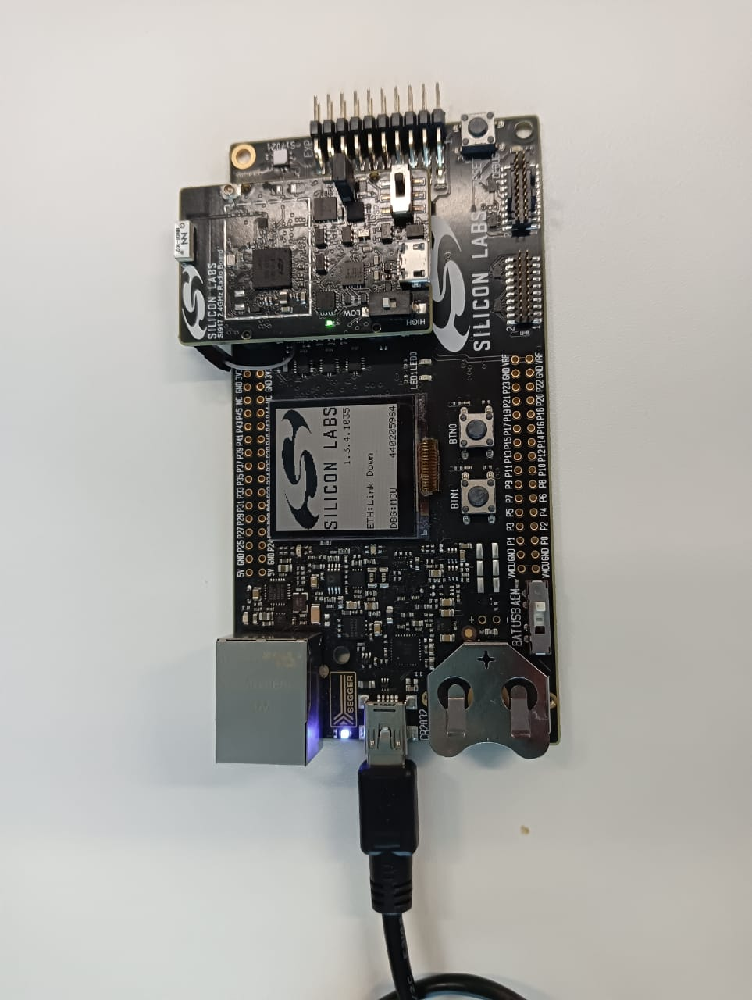

Running the Matter Demo over Wi-Fi for SiWx917 SoC
Flashing Images/Binaries on the SiWx917 SoC platform using Ozone or Simplicity Studio and Simplicity Commander
Note:
SiWx917 SoC device support is available in the latest Simplicity Studio and Simplicity Commander(versions 1v14p5 and above). To flash the TA Firmware/Matter application on SiWx917 SoC,
Convert the .s37 file into .rps file using the below command,
commander rps create <file-name>.rps --app <file-name>.s37Flash to the device using,
commander rps load <file-name>.rps
Official support for SiWx917 SoC device is not yet available in the Ozone Debugger, but can be configured - Ozone Environment Setup for SiWx917 SoC.
917 SoC switch positions: Left switch should be on the OFF/LOW, and right switch should be on the NORMAL side.
Plug the WSTK and SiWx917 radio board into the laptop.

Launch the Ozone Debugger.
In the New Project Wizard:
Click the three dots (
...) on the Device tab and select the Manufacturer asSilicon Labs.Select the Device as
Si917DualFlash.Click OK.
The Register set tab is populated automatically.
Note: Entering data in the Peripherals tab is optional.
Click Next. A window will be displayed showing the following:
Serial Number: Read from device
Target Interface: JTAG
Speed: 4MHz
Host Interface: USB
One Product in the Emulators connected via USB tab
Select the Product shown in the Emulators connected via USB tab and click Next.
Click the detected Silicon Labs device that gets displayed and click Next.
Click the three dots (
...) on that tab, select Browse and choose the*.outimage you wish to flash and run. Click Next.
Note: The image you select will be the one built using the instructions on the Building a Matter Wi-Fi End Device page.
Make sure the next screen has Initial PC selected as
Read from Base Address Vector Tableand click Finish.A Diagnostics Warning may be displayed about FreeRTOS being detected. Click Continue.
Select Download and Reset Program in the dropdown next to the Power button on the top-left hand corner of the page.
The SiWx917 SoC device will be erased and programmed.
Click Reset Program to main (F4) next to the Play/Pause button on the top-left hand corner of the page.
Note: This will reset the MCU after flashing the application.
Run the image by clicking the Resume/Halt button on the top-left hand corner of the page (or press the F5 key).
Note:
The output of the SiWX917 SoC application will be displayed on the Ozone terminal or J-Link RTT Client.
The RTT Client is provided with Ozone and does not have to be downloaded separately.
Demo Execution - Commissioning a SiWx917 SoC Device using chip-tool for Linux
Note: Commissioning can be done using chip-tool running either on Linux or Raspberry Pi.
Get the SSID and PSK of the Wi-Fi network (WPA2 - Security) you are connected to.
Run the following:
$ cd $MATTER_WORKDIR/matter
Commissioning Command:
$ out/standalone/chip-tool pairing ble-wifi 1122 $SSID $PSK 20202021 3840
Note:
The Node ID used here is
1122. This will be used in future commands.The below given steps (3, 4, 5) are for Lighting-app, use app specific commands if you are using any other application.
To turn on the LED on the SiWx917:
$ out/standalone/chip-tool onoff on 1122 1
To turn off the LED on the SiWx917:
$ out/standalone/chip-tool onoff off 1122 1
The updated on/off state may be verified with the following command:
$ out/standalone/chip-tool onoff read on-off 1122 1
If you are having difficulty getting the chip-tool to commission the device successfully, refer to the troubleshooting information on the Running the Matter Demos over Wi-Fi on EFR32 hosts page.
As the device remembers the Access Point credentials given for commissioning, if you want to run the demo multiple times, do a Factory Reset.
The commissioning command mentioned above does the following:
chip-tool scans BLE and locates the Silicon Labs device that uses the specified discriminator
Sends the Wi-Fi SSID and Passkey
The Silicon Labs device will join the Wi-Fi network and get an IP address. It then starts providing mDNS records on IPv4 and IPv6
chip-tool then locates the device over Wi-Fi and establishes operational certificates
Future communications (tests) will then happen over Wi-Fi